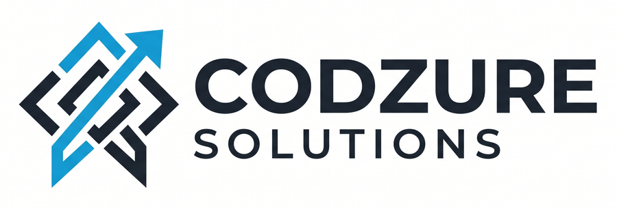

Capabilities · contracts · codes that must work · execution checklist
/agent only.
Host wiring is a separate one-line change (see INTEGRATION.md). Do not edit files outside /agent for this merge.contract.ts — shapes + ports (dependency-free). Do not break.INTEGRATION.md — registerAgent(mount, deps) + Stub → Real.adapters/real.ts — fill every // TODO.README.md — run / curl / browser chat.| Product | Capability | Tool | Behavior |
|---|---|---|---|
| Neo | Draft sale from NL | record_sale | Returns requiresConfirmation: true — no write |
| Neo | Confirm draft | confirm_action | Executes by draftId → persists Sale |
| Neo | List sales | list_sales | Read-only, immediate |
| Nyumba | Search listings | search_listings | location / bedrooms / maxPrice / nearby — immediate |
Also: browser chat GET /agent (Codzure logo), health/tools, LLM providers local (default free) · openai-compatible · anthropic, StubAdapters + RealAdapters template.
Routes under /agent/* only. Env: AGENT_*.
| Method | Path | Must return |
|---|---|---|
| GET | /agent | HTML chat |
| GET | /agent/assets/codzure_logo_full.png | PNG 200 |
| GET | /agent/health | { ok, module, products, llm, demoMode, chat } |
| GET | /agent/tools?product=neo|nyumba | Tool list |
| POST | /agent/message | AgentResponse |
{
"message": "string",
"product": "neo" | "nyumba",
"userId": "string",
"sessionId": "string"
}
{
"reply": "string",
"product": "neo" | "nyumba",
"sessionId": "string",
"draft": {
"id": "agent_draft_…",
"tool": "record_sale",
"summary": "…",
"requiresConfirmation": true
},
"data": {}
}
draft optional (writes only). data optional structured tool output.
contract.ts)draftSale(input) → { requiresConfirmation: true, draftId, summary } — must not write yetlistSales(userId?) → Sale[]search({ location, bedrooms?, maxPrice?, nearby? }) → Listing[] — immediategetDraft(draftId) → DraftAction | nullconfirm(draftId) → success/error — this writes Neo salesagent_ id prefix.
With StubAdapters + AGENT_LLM_PROVIDER=local:
# 1) Draft — must return draft.requiresConfirmation === true
curl -s -X POST http://127.0.0.1:8787/agent/message \
-H 'Content-Type: application/json' \
-d '{"message":"sold 3 bags cement to Mary 1500","product":"neo","userId":"demo-user","sessionId":"neo-1"}'
# 2) Confirm — replace DRAFT_ID
curl -s -X POST http://127.0.0.1:8787/agent/message \
-H 'Content-Type: application/json' \
-d '{"message":"confirm DRAFT_ID","product":"neo","userId":"demo-user","sessionId":"neo-1"}'
# 3) List
curl -s -X POST http://127.0.0.1:8787/agent/message \
-H 'Content-Type: application/json' \
-d '{"message":"show my sales","product":"neo","userId":"demo-user","sessionId":"neo-1"}'
curl -s -X POST http://127.0.0.1:8787/agent/message \
-H 'Content-Type: application/json' \
-d '{"message":"find 2 bedroom places in Westlands under 100000 near Sarit","product":"nyumba","userId":"demo-user","sessionId":"ny-1"}'
curl -s -X POST http://127.0.0.1:8787/agent/message \
-H 'Content-Type: application/json' \
-d '{"message":"show land in Ruiru","product":"nyumba","userId":"demo-user","sessionId":"ny-2"}'
curl -s http://127.0.0.1:8787/agent/health curl -s 'http://127.0.0.1:8787/agent/tools?product=neo' cd agent && npm install && npm run typecheck && npm run build
| AGENT_LLM_PROVIDER | Paid? | Notes |
|---|---|---|
local (default) | No | Weak local NLU → same tools |
openai-compatible | Free tier OK | Groq etc. via BASE_URL + API_KEY + MODEL |
anthropic | Credits | Needs AGENT_ANTHROPIC_API_KEY with balance |
import { registerAgent, createStubAdapters } from "./agent/index.js";
registerAgent((path, method, handler) => {
app[method.toLowerCase()](path, async (req, res) => {
const out = await handler({ body: req.body, query: req.query, headers: req.headers });
res.status(out.status).type(out.contentType ?? "json").send(out.body);
});
}, {
...createStubAdapters(), // → createRealAdapters() in prod
anthropicApiKey: process.env.AGENT_ANTHROPIC_API_KEY ?? "unused",
llmProvider: process.env.AGENT_LLM_PROVIDER ?? "local",
demoMode: process.env.AGENT_DEMO_MODE === "1",
});
agent/ contract.ts ← MUST stay stable knowledge.ts index.ts ← registerAgent / handleAgentMessage demo-ui.ts / assets/ core/loop.ts / weak-llm.ts / openai-compat.ts / registry.ts / logger.ts adapters/stub.ts / real.ts tools/neo/* / tools/nyumba/* HANDOFF.md · HANDOFF.html · HANDOFF.pdf INTEGRATION.md · README.md